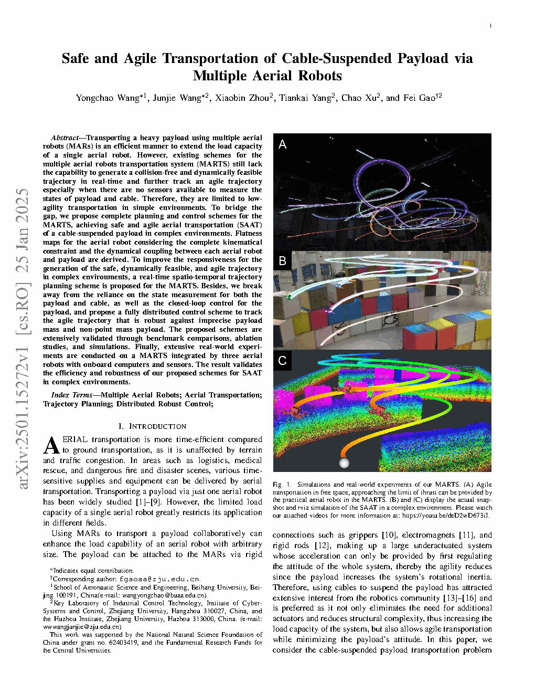
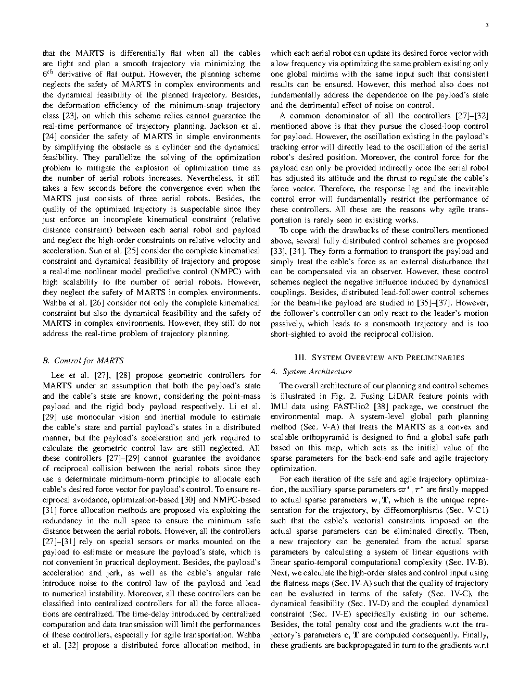
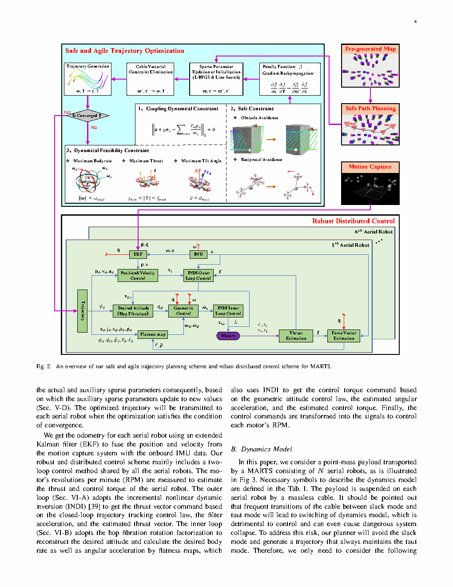
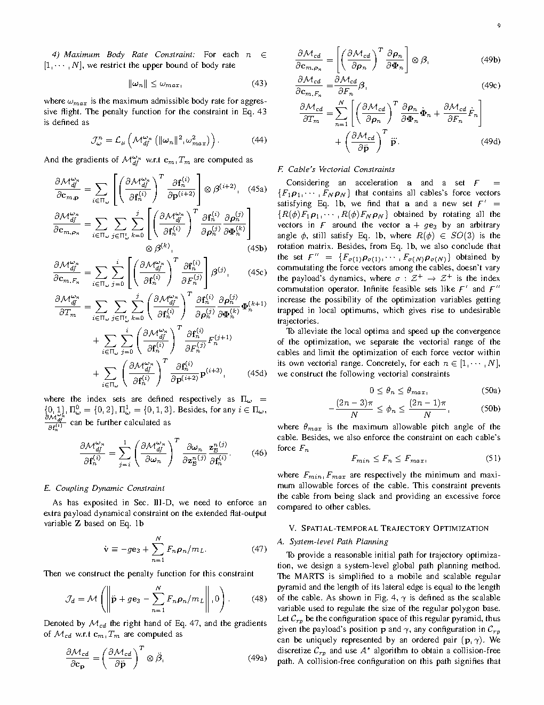

| 标题 | Safe and Agile Transportation of Cable-Suspended Payload via Multiple Aerial Robots（多空中机器人安全敏捷的缆绳悬吊负载运输） |
| 作者 | Yongchao Wang（王永超）1、Junjie Wang（王俊杰）1、Xiaobin Zhou（周晓斌）1、Tiankai Yang（杨天凯）1、Chao Xu（许超）2、Fei Gao（高飞，通讯作者）1,2 |
| 单位 | 1. 浙江大学 控制科学与工程学院（杭州 310027）；2. 北京航空航天大学 自动化科学与电气工程学院 |
| 发表 | arXiv:2501.15272，2026年 |
| arXiv | 2501.15272 |
| TL;DR | 提出一种基于微分平坦的多空中机器人缆绳悬吊负载运输完整规划-控制框架——利用平坦映射（flatness map）将多机器人-负载耦合动力学映射到平坦输出空间，在此空间中进行实时时空轨迹规划（spatio-temporal trajectory planning），再通过全分布式控制器实现各机器人仅依赖本地信息的独立控制，无需测量负载状态或缆绳张力，且对负载质量不确定性和外部扰动具有鲁棒性；在3架空中机器人平台上完成了真实物理实验验证。 |
| 灵感来源 | 对应的洞察 | 类型 |
|---|---|---|
| 微分平坦理论（Fliess et al., 1995）：平坦系统的所有状态/输入均可由平坦输出及其导数代数表出 | 多机-缆绳-负载系统的平坦输出为负载位置+偏航——在平坦空间中做无约束轨迹规划，通过平坦映射将规划结果映射回全状态空间和控制空间 | 数学 |
| 微分平坦在四旋翼控制中的成功应用（Mellinger & Kumar, 2011）：四旋翼本身也是平坦系统 | 将单机平坦控制的思想推广到多机悬吊系统——不仅单机本身是平坦的，整个多机-负载耦合系统也是平坦的，可统一处理 | 方法 |
| 分布式控制中的"本地信息即可"原则：不依赖全局状态反馈 | 平坦映射将每个机器人的期望状态表达为仅依赖负载平坦输出的解析函数——每台机器人只需知道自己"应该在哪里"，无需知道负载的实际位置或缆绳张力 | 架构 |
| 时空轨迹优化（spatio-temporal optimization）：同时优化路径形状和时间分配 | 在平坦输出空间中同时优化负载轨迹的几何路径和沿路径的速度剖面——生成既满足动力学约束又最小化运输时间的轨迹 | 算法 |
flowchart TB
subgraph MISSION["任务层 · 用户指令"]
TARGET["目标位姿 · 6-DoF"]
ENV["环境信息 · 障碍物+边界"]
end
subgraph PLANNING["规划层 · 平坦输出空间"]
direction LR
FLAT_SPACE["平坦输出空间 · y=[p_L,ψ]"]
TRAJ_OPT["时空轨迹优化 · MINCO参数化"]
FLAT_MAP["平坦映射 · Φ(y,…,y⁴)→x, Ψ(y,…,y⁴)→u"]
end
subgraph ROBOTS["执行层 · 多空中机器人"]
subgraph R1["机器人 1"]
CTRL1["分布式控制器 1 · 级联位姿跟踪"]
QUAD1["四旋翼平台 1 · 推力+力矩"]
end
subgraph R2["机器人 2"]
CTRL2["分布式控制器 2 · 级联位姿跟踪"]
QUAD2["四旋翼平台 2 · 推力+力矩"]
end
subgraph R3["机器人 3"]
CTRL3["分布式控制器 3 · 级联位姿跟踪"]
QUAD3["四旋翼平台 3 · 推力+力矩"]
end
end
subgraph PHYSICAL["物理层 · 负载+缆绳"]
CABLES["缆绳耦合 · 长度固定约束"]
PAYLOAD["悬吊负载 · 运输目标"]
end
TARGET --> FLAT_SPACE
ENV --> FLAT_SPACE
FLAT_SPACE --> TRAJ_OPT
TRAJ_OPT --> FLAT_MAP
FLAT_MAP -->|"平坦参考: x_ref,i, u_ff,i"| CTRL1
FLAT_MAP -->|"平坦参考: x_ref,i, u_ff,i"| CTRL2
FLAT_MAP -->|"平坦参考: x_ref,i, u_ff,i"| CTRL3
CTRL1 --> QUAD1
CTRL2 --> QUAD2
CTRL3 --> QUAD3
QUAD1 --> CABLES
QUAD2 --> CABLES
QUAD3 --> CABLES
CABLES --> PAYLOAD
CTRL1 -.->|"本地状态反馈 · 无负载状态"| QUAD1
CTRL2 -.->|"本地状态反馈 · 无负载状态"| QUAD2
CTRL3 -.->|"本地状态反馈 · 无负载状态"| QUAD3
classDef mission fill:#f0ebfd,stroke:#8b5cf6,stroke-width:2px,color:#6d28d9
classDef plan fill:#e8f0fe,stroke:#3b82f6,stroke-width:2px,color:#1d4ed8
classDef ctrl fill:#fef7ed,stroke:#f59e0b,stroke-width:2px,color:#92400e
classDef phys fill:#e6f7ee,stroke:#10b981,stroke-width:2px,color:#047857
class TARGET,ENV mission
class FLAT_SPACE,TRAJ_OPT,FLAT_MAP plan
class CTRL1,QUAD1,CTRL2,QUAD2,CTRL3,QUAD3 ctrl
class CABLES,PAYLOAD phys
flowchart TB
subgraph INPUT["输入端 · 任务定义"]
TASK["目标负载位姿 · p_L^des, ψ^des"]
CONSTRAINTS["约束条件 · 安全区域+障碍物"]
end
subgraph FLAT_PLAN["平坦空间规划 · 无约束优化"]
POLY["多项式样条参数化 · 平坦输出轨迹"]
SPATIAL["空间优化 · 路径形状+安全走廊"]
TEMPORAL["时间优化 · 速度剖面+时间分配"]
FEASIBLE["可行性检查 · 推力/角速度边界"]
end
subgraph FLAT_MAP_CALC["平坦映射计算 · 解析反算"]
REF_STATES["参考状态计算 · 各机位姿+速度+加速度"]
REF_INPUTS["前馈控制计算 · 各机期望推力+姿态"]
CABLE_CONST["缆绳约束验证 · 长度一致性自检"]
end
subgraph CTRL_OUT["分布式控制 · 本地执行"]
POS_LOOP["位置环 · PD+前馈"]
ATT_LOOP["姿态环 · 四元数误差+角速度"]
RATE_LOOP["角速度环 · 体坐标系力矩"]
THRUST_MAP["推力分配 · 电机转速指令"]
end
TASK --> POLY
CONSTRAINTS --> POLY
POLY --> SPATIAL --> TEMPORAL --> FEASIBLE
FEASIBLE -->|"平坦输出轨迹 y(t)"| REF_STATES
REF_STATES --> REF_INPUTS
REF_INPUTS --> CABLE_CONST
CABLE_CONST --> POS_LOOP
POS_LOOP --> ATT_LOOP --> RATE_LOOP --> THRUST_MAP
CABLE_CONST -.->|"不满足: 重规划"| POLY
THRUST_MAP -.->|"电机指令"| QUAD_OUT["四旋翼执行器"]
classDef inClass fill:#f0ebfd,stroke:#8b5cf6,stroke-width:2px,color:#6d28d9
classDef planClass fill:#e8f0fe,stroke:#3b82f6,stroke-width:2px,color:#1d4ed8
classDef mapClass fill:#fef7ed,stroke:#f59e0b,stroke-width:2px,color:#92400e
classDef ctrlClass fill:#e6f7ee,stroke:#10b981,stroke-width:2px,color:#047857
class TASK,CONSTRAINTS inClass
class POLY,SPATIAL,TEMPORAL,FEASIBLE planClass
class REF_STATES,REF_INPUTS,CABLE_CONST mapClass
class POS_LOOP,ATT_LOOP,RATE_LOOP,THRUST_MAP,QUAD_OUT ctrlClass
flowchart TD
subgraph STAGE1["阶段1: 任务接收与初始化"]
direction LR
S1A["接收目标位姿 · p_L^des, ψ^des"] --> S1B["系统自检 · 各机IMU+里程计就绪"] --> S1C["初始平坦输出轨迹生成 · 直线或悬停"] --> S1D["平坦映射计算初始参考状态"]
end
subgraph STAGE2["阶段2: 在线轨迹规划"]
direction LR
S2A["环境感知更新 · 障碍物+安全约束"] --> S2B["平坦空间重规划 · MINCO优化"] --> S2C["时空联合优化 · 最小化运输时间+控制代价"] --> S2D["平坦映射 · 解析反算各机参考+前馈"]
end
subgraph STAGE3["阶段3: 分布式跟踪控制"]
direction LR
S3A["广播平坦输出轨迹 · 所有机器人接收"] --> S3B["各机独立计算本地参考信号"] --> S3C["级联控制器跟踪 · 位姿+姿态+角速度"] --> S3D["本地状态反馈 · 无负载/缆绳测量"]
end
subgraph STAGE4["阶段4: 到达与释放"]
direction LR
S4A["负载到达目标区域 · 位置误差<阈值"] --> S4B["各机减速悬停 · 姿态稳定"] --> S4C["负载安全释放 · 缆绳脱钩"] --> S4D["各机返航或执行下一任务"]
end
STAGE1 -->|"系统就绪"| STAGE2
STAGE2 -->|"平坦参考: x_ref(t), u_ff(t)"| STAGE3
STAGE3 -->|"到达目标"| STAGE4
S2C -.->|"在线重规划: 避障/扰动恢复"| S2B
S3D -.->|"误差反馈: 各机本地修正"| S3C
classDef s1 fill:#f0ebfd,stroke:#8b5cf6,stroke-width:2px,color:#6d28d9
classDef s2 fill:#e8f0fe,stroke:#3b82f6,stroke-width:2px,color:#1d4ed8
classDef s3 fill:#fef7ed,stroke:#f59e0b,stroke-width:2px,color:#92400e
classDef s4 fill:#e6f7ee,stroke:#10b981,stroke-width:2px,color:#047857
class S1A,S1B,S1C,S1D s1
class S2A,S2B,S2C,S2D s2
class S3A,S3B,S3C,S3D s3
class S4A,S4B,S4C,S4D s4
| 类别 | 内容 | 维度/频率 |
|---|---|---|
| 输入 | (1) 负载目标位姿（$\mathbf{p}_L^{\text{des}}, \psi^{\text{des}}$）；(2) 环境约束（安全区域边界、障碍物位置）；(3) 各机器人本地状态（IMU + 里程计/运动捕捉）；(4) 负载名义质量 $m_L$ | 目标位姿：6-DoF / 任务级 | 本地状态：~100-200Hz |
| 输出 | (1) 平坦输出空间中的光滑轨迹 $\mathbf{y}(t)$；(2) 通过平坦映射计算的各机器人参考状态 $\mathbf{x}_{i,\text{ref}}(t)$ 和前馈控制 $\mathbf{u}_{i,\text{ff}}(t)$；(3) 各机器人电机的实际转速指令 | 轨迹：多项式样条 / 规划级 | 控制指令：~100-200Hz |
| 目标 | 在真实物理平台上实现多机器人协同悬吊运输——负载稳定到达目标位姿，运输过程无碰撞、无缆绳松弛、各机器人不超推力/姿态限制，且对负载质量不确定性鲁棒 | 实验指标：位置误差 < 0.1m，姿态稳定，±30% 质量偏差下系统稳定 |
这是一个多智能体协同运输与运动规划控制问题，具体属于欠驱动多体系统的规划-控制联合设计范畴。与传统多机器人编队或协同搬运不同，本文的独特之处在于：(1) 负载通过缆绳悬吊而非直接机械固定——引入了额外的欠驱动自由度和摆荡动力学；(2) 微分平坦性质的证明和利用——将高维耦合系统规划问题降维为低维平坦空间中无约束优化；(3) 分布式控制架构——无需负载状态反馈或集中式通信网络。场景为室外物流运输和应急救援，任务目标是安全、敏捷、鲁棒地将悬吊负载送达目标位置。
表头用英文，正文用中文
| Prior Method | Core Idea | Why It Fails |
|---|---|---|
| LQR / 几何控制（如Sreenath, Lee & Kumar等） | 在悬停平衡点附近线性化系统，利用LQR或微分几何方法设计控制器，保证局部指数稳定 | 依赖负载状态的完整反馈（位置+速度+姿态+角速度）——在实践中这些状态无法直接测量。且线性化假设仅在平衡点附近成立，不适用于敏捷机动（大角度摆荡、快速加减速）场景。 |
| 轨迹优化 + 跟踪控制（如Palunko et al., 2012） | 在任务空间中优化负载轨迹，然后用模型预测控制（MPC）或时变LQR跟踪 | 轨迹优化在全状态空间中进行——维度随机器人数量线性增长，求解计算量巨大，无法实时重规划。且MPC需要在线求解优化问题，机载处理器难以满足毫秒级控制周期的实时性要求。 |
| 集中式协同控制（如Michael et al., 2010） | 所有机器人的状态汇集到中央控制器，统一决策和分配控制 | 通信延迟和单点故障风险严重——实际飞行中无线信道质量波动大，集中式架构的鲁棒性不足。且各机状态的全局同步增加了通信开销，限制了可支持的机器人数量和作业范围。 |
| 强化学习方法（如RL-based payload transport） | 在仿真中训练神经网络策略，学习从观测到控制输入的端到端映射 | Sim-to-Real gap——缆绳动力学在仿真中难以高保真建模（柔性缆绳的高频振动、空气阻力等）。训练好的策略迁移到真实平台后性能退化严重。且RL策略缺乏安全性保证——无法形式化证明不会发生碰撞或缆绳松弛。 |
本文的方法分为两个主要模块——规划模块（平坦空间中的时空轨迹优化）和控制模块（基于平坦映射的分布式控制器）。两个模块通过平坦映射在数学上无缝衔接：规划模块在低维平坦输出空间生成光滑轨迹，平坦映射将该轨迹解析地反算为各机器人的参考状态和前馈控制，控制模块仅需跟踪这些本地参考信号。以下按公式组逐一拆解。
LaTeX rendered by MathJax。显示公式用 $$...$$，行内公式用 $...$。符号解释请用中文。
| 参数 | 取值 | 含义 | 为什么取这个值 |
|---|---|---|---|
| 机器人数量 $N$ | 3 | 协同运输的四旋翼数量 | 3架是悬吊运输的最小稳定配置——2架只能控制负载的2个平动自由度，3架可以实现负载3D空间中的全向运输。更多机器人增加冗余但通信和协调复杂度上升 |
| 缆绳长度 $\ell_i$ | 0.8~1.5m | 各机器人到负载的缆绳长度 | 缆绳过长→负载摆荡周期大，控制难度增加；缆绳过短→各机器人距离太近，螺旋桨气流相互干扰。0.8~1.5m在实验中平衡了可操作性与稳定性 |
| 平坦输出维度 | 4（负载位置3维+偏航1维） | 用以参数化全系统行为的低维空间 | 负载3D位置对应系统的3个平动自由度，偏航角对应系统的1个可控转动自由度——从微分平坦理论可严格证明这4维构成完整平坦输出 |
| 轨迹多项式阶数 | 7~9阶 | MINCO参数化中每段多项式的阶数 | 平坦映射需要平坦输出导数到4阶（$\mathbf{y}^{(4)}$）——多项式需足够高阶以保证加速度、加加速度和snap的连续性和平滑性 |
| 控制频率 | 100~200Hz | 各机器人本地控制回路的更新率 | 四旋翼的姿态环和角速度环需要足够的控制带宽来抑制扰动——100~200Hz在机载嵌入式处理器（ARM Cortex-M系列）上可以实时运行 |
| 负载质量不确定范围 | ±30% | 实验验证中前馈模型与实际负载的质量偏差 | 实际运输中负载质量无法精确预知——±30%覆盖了典型不确定性范围（如包裹重量标注误差、同型号货物的重量波动） |
理解本文需要掌握三个关键基础原理：微分平坦（为什么低维空间可以完整描述高维系统）、平坦映射的力学推导（缆绳张力如何由负载加速度唯一决定）、分布式控制的鲁棒性保证（无负载反馈如何稳定）。
不用微分平坦的反面案例：假设不用平坦性，直接在高维空间中规划——对于 $N=3$ 的系统，状态包括3架四旋翼的位置(3x3)+速度(3x3)+姿态(3x3)+角速度(3x3)+负载位置(3)+速度(3)+缆绳张力(3) = 51维状态空间。在这51维空间中显式施加缆绳约束和动力学约束进行轨迹优化——非凸、高维、强约束、实时求解几乎不可能。而通过平坦映射，问题退化为4维空间中的无约束优化——计算量从天到毫秒。
为什么不需要缆绳张力反馈：传统控制律中常包含缆绳张力项来补偿耦合扰动——当另一架机器人出现跟踪误差时，缆绳张力的变化会影响本机。但在本文的架构中，这种耦合扰动通过以下方式被处理：(1) 前馈项 $\mathbf{f}_i^{\text{ff}}$ 包含了"缆绳方向随时间变化"的动力学先验信息（因为平坦映射显式编码了 $\dot{\boldsymbol{\xi}}_i$ 和 $\ddot{\boldsymbol{\xi}}_i$）；(2) 高增益PD反馈提供足够的扰动抑制带宽；(3) 积分项补偿慢变的模型误差和外部扰动。这使得缆绳张力的实时测量成为非必须——前馈+高带宽反馈的组合足以稳定系统。
为什么在平坦空间中做时空优化特别合适：(1) 平坦空间维度低（4维），多项式样条的计算成本不高；(2) 平坦输出导数需要到4阶——MINCO的多项式基础天生支持高阶光滑性（7~9阶多项式保证snap连续性）；(3) 约束检查（如推力边界）通过平坦映射解析反算——不需要在优化中维护高维状态约束，直接将平坦输出轨迹代入平坦映射公式即可判断可行性。
论文原图截图。图片保存至 figures/ 子目录。命名 fig1.png ~ fig4.png 即可自动显示。

请将截图保存为figures/fig1.png本图展示了：真实物理实验中3架四旋翼通过缆绳协同悬吊运输负载的场景。系统整体由3个完全同构的四旋翼平台、3根等长缆绳和1个悬吊负载构成。每架机器人通过独立缆绳连接到负载的同一点（或分布式连接点）。

请将截图保存为figures/fig2.png本图展示了：平坦映射的计算流程——输入是平坦输出 $\mathbf{y} = [\mathbf{p}_L, \psi]$ 及其到4阶导数，输出是各机器人的期望状态（位姿+速度+加速度+角速度）和期望控制（推力+力矩）。整个流程是纯解析的——不涉及迭代或优化。

请将截图保存为figures/fig3.png本图展示了：负载从起点到终点的3D运输轨迹对比——蓝色为规划轨迹（平坦输出空间生成），红色为实际执行轨迹。同时展示了各机器人在运输过程中的推力时间曲线。

请将截图保存为figures/fig4.png本图展示了：在不同负载质量偏差（-30%, 0%, +30%）下的系统表现——包括位置跟踪误差、缆绳张力、姿态稳定性等指标。
| 数据问题 | 潜在困难 | 严重程度 |
|---|---|---|
| 负载质量估计误差 | 前馈推力 $\mathbf{f}_i^{\text{ff}}$ 基于名义质量 $m_L$ 计算——误差 > 50% 时积分项可能需要较长时间补偿，过渡过程跟踪误差大。且质量误差影响平坦映射中对缆绳方向 $\boldsymbol{\xi}_i$ 的计算（影响程度随加速度增大而增强） | 较高 |
| 各机定位精度下降 | 室外场景中GPS/VIO定位精度从mm降至dm——位置跟踪误差增大，反馈增益 $\mathbf{K}_p$ 和 $\mathbf{K}_d$ 需要重新调参。定位噪声过大可能导致高频推力抖动，激发缆绳弹性振动 | 高 |
| 缆绳长度（运动学参数）标定误差 | 缆绳实际长度 $\hat{\ell}_i \neq \ell_i$（标称值）→ 平坦映射中各机位置的解析计算结果存在偏差 → 缆绳方向与理想方向偏离 → 负载合力方向偏离期望 → 负载轨迹偏移。误差影响在系数 $d\mathbf{p}_i/d\ell_i = \boldsymbol{\xi}_i$ 上 | 较高 |
| 外部风扰与气动干扰 | 多机近距离飞行时螺旋桨下洗流相互干扰 + 环境风 → 各机受到未知气动扰动力 → 跟踪误差增大。强风下负载可能产生大幅摆荡（缆绳方向快速变化），平坦映射的准静态假设可能被打破 | 高 |
| 参考文献 | 为什么重要 |
|---|---|
| Fliess et al. (1995) — Flatness and defect of non-linear systems: introductory theory and examples. Int. J. Control | 微分平坦理论的奠基性论文——提出平坦性概念、平坦输出的性质、以及平坦性在轨迹规划和跟踪控制中的应用框架。理解本文的数学根基必须从这里开始。 |
| Mellinger & Kumar (2011) — Minimum snap trajectory generation and control for quadrotors. ICRA 2011 | 率先将微分平坦应用于四旋翼轨迹生成——证明四旋翼的平坦输出为位置+偏航，用minimum snap多项式在平坦空间中高效规划。本文的平坦规划思想直接继承自此——但将"单机平坦"扩展到"多机+缆绳+负载"系统。 |
| Sreenath, Lee & Kumar (2013) — Geometric control and differential flatness of a quadrotor UAV with a cable-suspended load. CDC 2013 | 首次分析单机-缆绳-负载系统的微分平坦性质和几何控制——证明单四旋翼悬吊负载系统是微分平坦的。本文的贡献之一是将此结果推广到多机场景——从1架到N架的平坦性推广并非平凡，因为缆绳张力分配引入了新的耦合维度。 |
| Wang et al. (2022) — Geometrically constrained trajectory optimization for multicopters. IEEE TRO 2022 | MINCO轨迹参数化的代表性工作——提出时空联合优化的高效框架。本文的平坦空间轨迹规划模块直接使用了MINCO参数化方法。 |